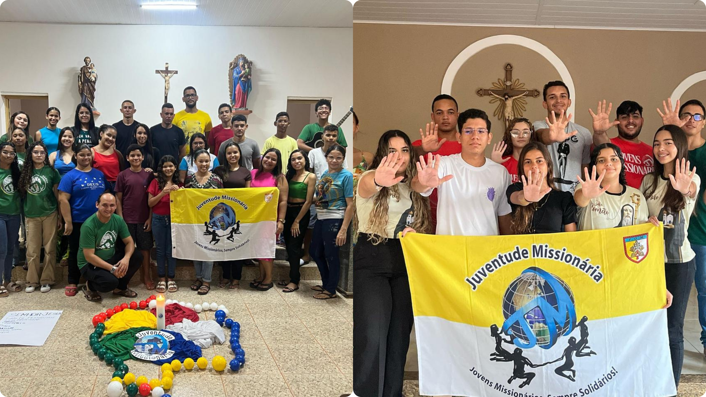

Com grande alegria e entusiasmo, anunciamos a implantação de dois novos grupos da Juventude Missionária (JM) em nossa diocese, fortalecendo ainda mais a presença jovem e missionária em nossas comunidades!
A Juventude Missionária agora está presente também na Capela de Nossa Senhora do Perpétuo Socorro, localizada na comunidade Lagoinha, pertencente à Paróquia de Nossa Senhora de Fátima, em Mossoró. Um novo grupo que nasce com o desejo ardente de viver a missão, levando a Palavra de Deus aos corações e testemunhando a fé com alegria e compromisso. Além disso, celebramos também a chegada da JM à comunidade de São Romão, pertencente à Paróquia de São Francisco das Chagas, localizada na região da Maísa. Jovens cheios de coragem e esperança se unem à missão da Igreja com o coração aberto, prontos para servir e evangelizar. Essas novas implantações representam muito mais do que a expansão da Juventude Missionária — são sinais vivos de que o Espírito Santo continua agindo e inspirando os jovens a abraçarem com amor a missão deixada por Jesus. Cada grupo é uma semente de fé plantada no coração da comunidade, chamada a florescer através da oração, do serviço e da solidariedade. Que Nossa Senhora das Missões continue guiando cada passo dessa juventude missionária, e que essas novas frentes sejam fonte de renovação, união e crescimento espiritual para todos. Parabéns às comunidades da Lagoinha e de São Romão por acolherem com tanto carinho essa iniciativa missionária. Sigamos juntos, com coragem e esperança, pois a missão é agora e começa por nós!